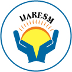

PUBLICATIONS & RESEARCH
Researching Ideas. Exploring Technology. Sharing Knowledge.
Research is an important part of my journey as a technology developer.
Alongside building software applications, I have been exploring research topics across Artificial Intelligence, Deep Learning, Data Science, Robotics, IoT, DevOps, Real-Time Systems, Education Technology, Healthcare Technology, and Intelligent Automation.
My research work is driven by a simple question:
"How can technology be applied to solve practical problems and create systems that are more intelligent, efficient, and useful?"
Through journal publications, ResearchGate contributions, research proposals, and experimental projects, I continue to explore ideas beyond conventional software development.
Research Profile
My research activities currently span multiple areas of computer science and emerging technology.
- Artificial Intelligence Machine Learning · Deep Learning · Generative AI · Intelligent Systems
- Real-Time Computing Real-Time Applications · Communication · Monitoring · Event-Driven Systems
- Software Engineering DevOps · CI/CD · Architecture · Deployment · Automation
- Data & Analytics Data Analysis · Statistical Modeling · Predictive Analytics · Visualization
- Robotics & IoT ROS · Robotics · Embedded Systems · IoT · Intelligent Devices
Research Impact
My research work is documented through ResearchGate, where I share publications, research proposals, and technical contributions.
ResearchGate Profile
27.0
Interest Score
14
Citations
1
h-index
My goal is not simply to increase research numbers, but to produce work that connects technical research with practical applications.
01 — Journal Publication
Deep Learning in Real-Time Applications

IJARESM
Journal / Research Paper · 2024
Deep Learning · AI · Real-Time Applications
Overview
Explores the role of deep learning technologies in applications where decisions, predictions, or responses need to happen within real-time environments.
Focuses on the transition of deep learning from experimental and offline environments toward practical applications where computational efficiency, responsiveness, and continuous data processing become important.
Why This Research Matters
Traditional ML operates on prepared datasets. Real-time applications introduce complexity. A useful real-time AI system must consider:
Data → Processing → Model → Prediction → Response
Research Perspective
An AI model should not be viewed independently. A complete intelligent application requires:
Model Accuracy + Processing Speed + System Architecture + Real-Time Response
ResearchGate Proposals & Works
02 — May 2026
DevOps in Real-Time Apps
DevOps · SWE · Real-Time Systems
Explores how development and operations can work together throughout the software lifecycle in real-time environments.
Dev → Test → Deploy → Monitor → Improve
03 — Dec 2025
Currency & Inflation Dynamics
Data Analysis · Economics · Statistics
Investigating how historical trends and economic indicators can be studied to understand changes in currency values.
Data Collection → Statistical Analysis → Interpretation
04 — Nov 2025
AIroMate
AI · Intelligent Assistants · Automation
Concept of an AI-powered companion designed to assist users through intelligent software capabilities.
User Input → AI Understanding → Useful Response
05 — Oct 2025
BookeReaderPL
EdTech · Digital Reading · Software
A digital reading platform designed to improve the way users interact with books and educational content.
Reading → Digital Learning → Interactivity
06 — Aug 2025
SmartTrack AI
AI · Tracking · Intelligent Systems
Investigates how AI can be used to make tracking systems more intelligent and reduce manual monitoring.
Tracking → Data → AI Processing → Insight
07 — Aug 2025
PengoBot
Robotics · AI · Voice · Home Automation
An intelligent, voice-interactive penguin-style robot combining embedded systems and AI.
Speech → AI Understanding → Robot Action
08 — Jul 2025
FYM Wellness Companion
AI · Personalization · Fitness Tech
An AI-powered companion designed around fitness, yoga, and meditation for personalized wellness.
User Info → AI Analysis → Personalized Recs
09 — Jul 2025
MyLittleHeart
IoT · Embedded Systems · Healthcare
Arduino-based smart health monitoring device combining hardware, sensors, and data collection.
Sensor → Arduino → Data → Monitoring
10 — Jun 2025
A Relational DB Approach
Database Systems · SWE
Exploring structured data organization and its direct impact on application reliability and scalability.
Data Modeling → Relationships → Queries
11 — Jun 2025
EduPulse
EdTech · Intelligent Systems · Automation
An intelligent homework and lesson management system to improve educational workflows digitally.
Lesson → Assignment → Submission → Monitor
My Research Evolution
My research journey has evolved alongside my development journey.
STAGE 01
Artificial Intelligence
Exploring how machine learning and deep learning could solve practical problems.
AI → ML → Deep Learning
STAGE 02
Real-Time Applications
Moving toward systems that process info and respond continuously.
AI → Real-Time Processing → Intelligent Apps
STAGE 03
IoT & Robotics
Exploring the connection between software and physical hardware systems.
Software → Sensors → Hardware → Robotics
STAGE 04
Intelligent Assistants
Systems that can understand users and provide intelligent assistance.
AI → Voice → Understanding → Automation
STAGE 05
SWE & DevOps
Studying how apps can be deployed, monitored, and maintained effectively.
Development → CI/CD → Deploy → Monitor
STAGE 06
Data & Predictive
Applying statistical and analytical methods to real-world datasets.
Data → Analysis → Patterns → Insights
Research Meets Development
My research and development activities are closely connected. When I research a technology, I try to understand how it can actually be implemented.
When I build a project, I often find questions that lead to further research. This creates a continuous cycle:
Research → Experiment → Build → Test → Learn → Research Again
For me, research is not separate from engineering. It is another way of understanding technology at a deeper level.
What Research Means
Research has taught me to look beyond:
"Can I build it?"
and ask:
- Why does it work?
- How can it be improved?
- What are its limitations?
- Can it work in a real environment?
- How can this idea be extended?
Future Direction & Philosophy
My future research interests are moving toward the intersection of several technologies:
AI + Generative AI + RAG + Real-Time Systems + Robotics + DevOps + Data Science
"Build what you research. Research what you build."
A paper gives an idea. An experiment tests the idea. A prototype gives it form. A real application proves its usefulness. And continuous research helps improve it.